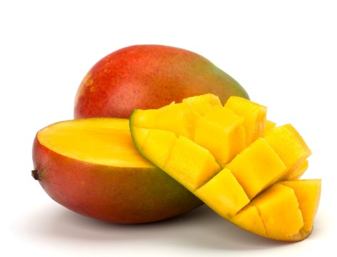
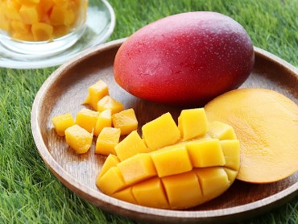

南部
|  |  |
熱量 :
40/個
水果介紹 :
楠西鄉愛文芒果，香氣芬芳、口感極佳、汁多纖維少，含有豐富維他命A.B1.B2.C，非常受到國人喜愛，是不可錯過的優質水果。「楠西鄉農會蜜之園愛文芒果干」係以新鮮愛文芒果肉製成，美味爽口不膩，且無任何添加物，完全保存芒果的獨特風味，是具健康、營養的最佳休閒食品
營養成分 :
芒果每百公克所含的維生素C，高出其他水果許多，此外，芒果所含的粗纖維，可增強腸蠕動。主要營養成分含有是果糖、葡萄糖等碳水化合物，相當容易消耗，並富含大量的胡蘿蔔素及維生素
B 群，而且抗氧化能力高，也可輔助維生素C、維生素E等其他抗氧化營養素，營養成分含量的總合均優於蘋果與奇異果
如何挑選 :
整體觸感扎實。外皮盡量選擇無黑斑者。
果園介紹 :